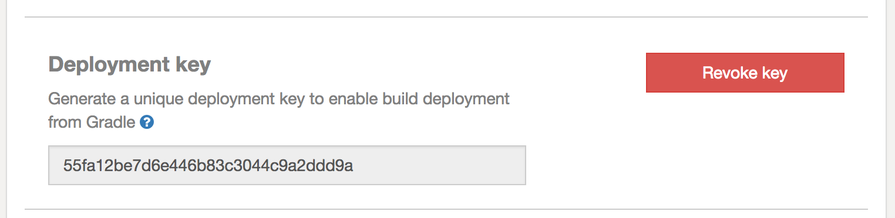

Deploy from Gradle¶
SpongeGradle makes it easy for plugin developers to deploy new versions of their plugin directly to Ore without even needing to open a browser. Once you have created a project on Ore and have published at least one version of your plugin, you can begin to deploy new versions of your plugin from your build script.
Tip
For more info on how to get started with Gradle and Sponge, check out Setting Up Gradle.
Configuring the signing plugin¶
Like all Ore uploads, the artifacts you publish from Gradle must be signed with the PGP private key that corresponds to
the public key you’ve added to your account in Publishing Your Plugin. Luckily, this is easily accomplished with Gradle as
it comes with a core-plugin that does just this. In order to use the oreDeploy task in Gradle, you must
configure the signing plugin as it depends on this specific plugin.
For more information on how to configure the signing plugin, please refer to the Gradle User Guide entry: The Signing Plugin.
Deployment credentials¶
The first step in enabling direct deployment is generating a deployment key to let Gradle publish to your project remotely. You can do this by navigating to your project settings, scrolling down to “Deployment key” and clicking “Generate key”.
Warning
Anyone with access to your special deployment key will have the ability to attempt to publish new versions to your project. Of course, they will also need your private PGP key to do so but still...keep it secret, keep it safe!
This deployment key must be supplied as the value of the property oreDeploy.apiKey. Following best practice, you
should put this in your gradle.properties file.
oreDeloy.apiKey=8c115d0c9b9e425281d870e329dd6741
Deployment configuration¶
In order to start using the oreDeploy task, you must configure which release channel you would like publish the
artifact to and you might want to specify whether it should be marked as “recommended” or not.
oreDeploy {
channel = 'release'
recommended = false // default true
}
Deploying artifacts¶
If you’ve made it this far you’re now ready to start publishing directly to Ore! Simply run gradle oreDeploy.
Example output:
> gradle oreDeploy
:generateMetadata
:compileJava
Note: Reading extra plugin metadata from [...]/build/tmp/generateMetadata/mcmod.info
Note: Writing plugin metadata to [...]/generateMetadata/mcmod.info
:processResources UP-TO-DATE
:classes
:jar UP-TO-DATE
:signArchives UP-TO-DATE
:oreDeploy
Publishing ore-test-plugin to https://ore.spongepowered.org.
Recommended: false
Channel: release
[success] https://ore.spongepowered.org/TestOrg/Ore-Test-Plugin/versions/1.0.1
BUILD SUCCESSFUL
Total time: 1.833 secs